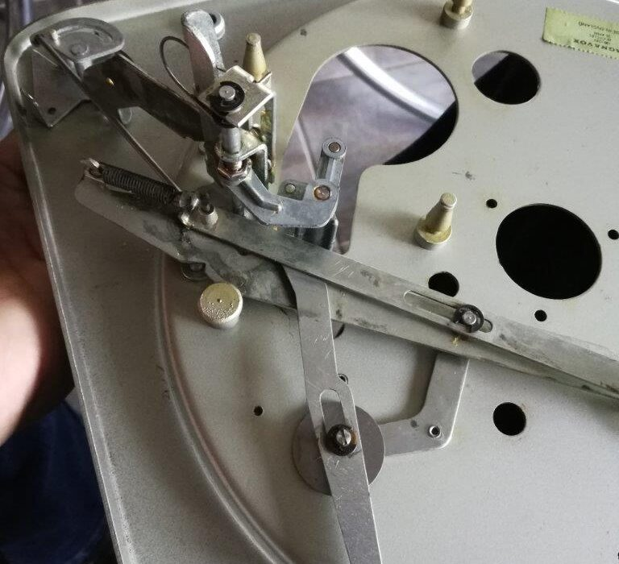
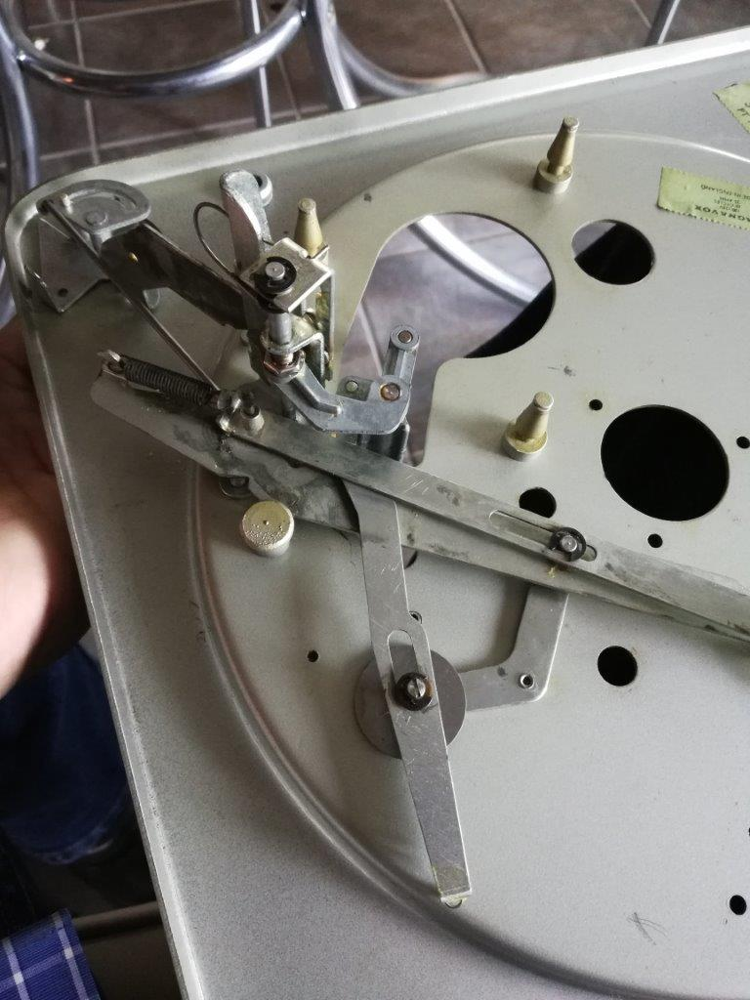
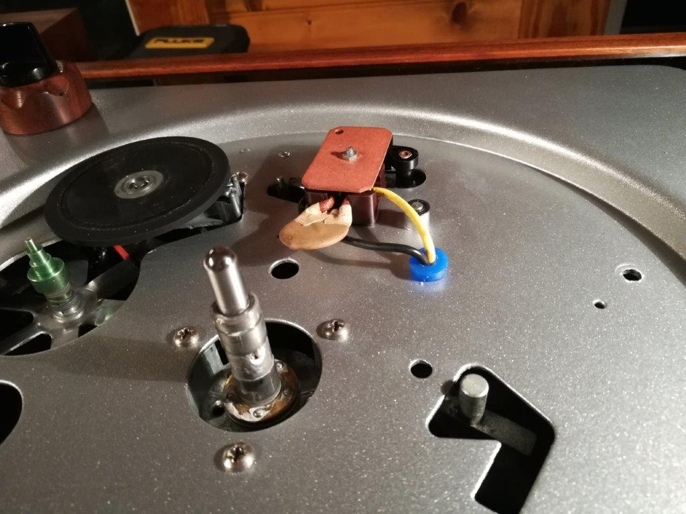

When I began building my custom Micromatic – I suppose I should now call it a Micromanual? – I intended to ditch all of the mechanism and redesign/fabricate my own. I swiftly realized what a herculean effort that would be and decided to keep the speed change mechanism for raising and lowering the idler only. I would use a simple toggle switch to start/stop the motor. Then it occurred to me that I couldn’t leave the idler in contact with the spindle perpetually, or it would develop divots in the rubber when at rest. So I needed to also retain the idler retraction mechanism. Since that piece is tied to the original switch, there was no reason not to include that as well.
The nest of levers, springs and gears which makes up the mechanism of the Magnavox/Collaro changers is hard to understand without a great deal of study. The service manual helps, however, only watching it work and noting which pieces come into play at different stages finally cemented in my mind what each of the myriad pieces do.
The Magnavox Micromatic service manual is available here:
Magnavox Micromatic Service Manual (PDF)
In the end, I retained relatively few pieces of the original mechanism to effect all of the functionality I desired.

The hardest part, by far, was shortening the tall control knob which was designed to make it easier to change speeds in a console or suitcase record player. It would not look right at all on a component turntable. Not having a replacement short knob, I had no choice but to fabricate something. Since the plinth would be Patagonian rosewood, and I had scraps from when I made the amplifier, I decided to turn one using that.
In previous posts I have described how I abuse my drill-press as a makeshift lathe. I used a hole saw to cut out a plug of rosewood, chucked it up in the drill-press using a 1/4″ bolt, and sanded it to a smooth knob, then used the Dremel with a 1/2″ sanding drum to scallop the edge. As a speed indicator, I drilled a 1/16″ hole and drove a stainless wire into the knob, sanding flush afterwards. Because the wood is so dense and oily on its own, I did not bother to finish it with anything but SC Johnson Paste Wax. (I include the link as an illustration; you don’t need two cans of this stuff, it lasts forever.)
I also had to redesign the post around which the knob spins, soldering a 5/16″ (1/4″ ID) bushing to the steel deck. Yes, you can solder to steel, with acid-type flux, and it is quite strong when done well. The shaft which controls the on/off mechanism and which retracts the idler (Part 75 in the service manual diagram) had to be shortened, and the original power switch, which sits on top of the knob, modified slightly. In the end, it all fits and works well, though perhaps not quite as smoothly as the original. It certainly looks better. I’d highly recommend starting with a short control knob, or obtaining one.
As far as the electrical part goes, because none of this turntable is connected to the house ground, I had to be VERY certain that the hot wire would not come into contact with the steel deck. The original switch mechanism is actually well designed, plastic encased, with a fiber top screwed to it. I polished the contacts, which appear to be fairly substantial silver pads, with Happich Semichrome, one of the finest metal (and plastic!) polishes I have ever used. It is gentle enough not to scrub metal away, but aggressive enough to remove fine scratches in many materials.
The wires to/from the switch, which had to pass through the steel deck, had only their own insulation between them and the steel edge. In an effort to bring this turntable up to something like a modern Class II electrical rating, I cut a small length of silicone vacuum hose, carved a groove in it, and made a bushing through which the wires could pass.

Tags: Micromatic, Turntable